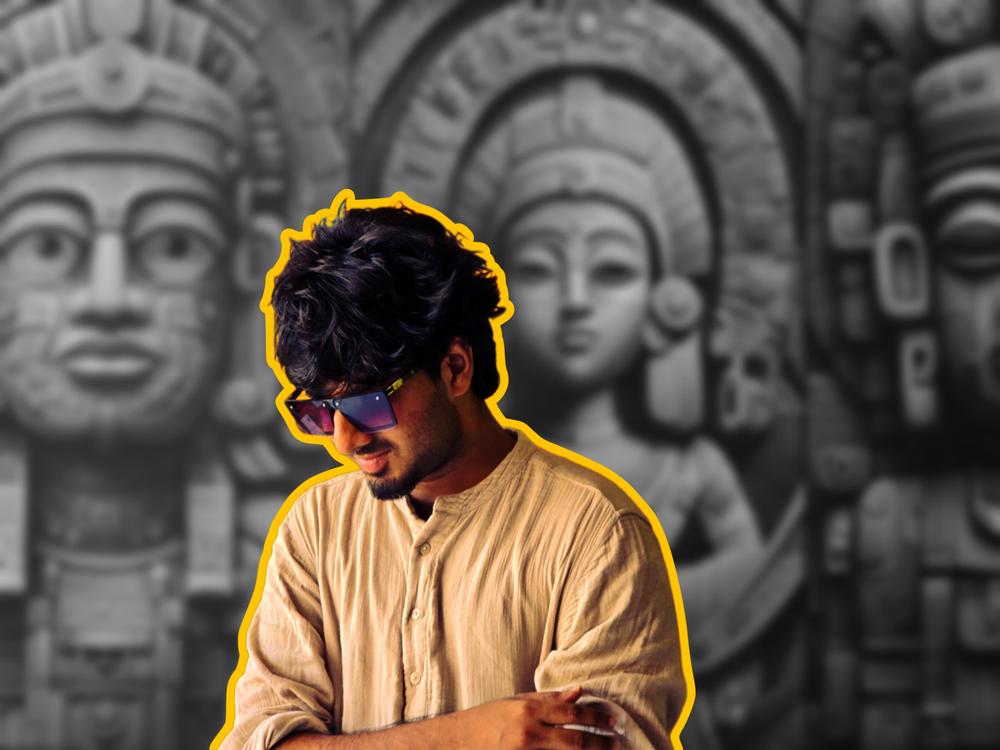

A Coming of Age Drama
2014, Trichy.
Ram aka Perry (13), Hari aka Keeri (13), and David aka Dhadi (13) are inseparable
friends. Life at home is difficult for all three. Perry lives with a strict mother and
an often-absent father, Keeri grows up surrounded by constant fights, and Dhadi
lives with his alcoholic father. Their homes are filled with tension, and the only
place they feel safe and happy is with each other. Whenever Perry feels
overwhelmed, he escapes to an old theatre to watch movies alone.
In the same colony lives Varipuli (24), a timid man with ADHD and Tourette
syndrome who is looked down upon by everyone, including his uncle, who runs a
wholesale-load business using a Tata Ace. Though Varipuli does most of the hard
work, he is never respected. The three boys are the only ones who treat him with
kindness, and their friendship means everything to him.
After the half-yearly holidays, a rich and arrogant classmate, Arjun (13), mocks the
boys for never having seen a beach. He boasts about his family trip to Varkala,
knowing they have never been there. Hurt and embarrassed, the boys promise
themselves that one day they will visit a beach, take photos, and prove him wrong.
Around the same time, Perry hears a rumour that actor Sivakarthikeyan will attend
their school annual day. The news spreads throughout the school, but on the day,
the students discover that it was false. Arjun humiliates the boys again, and the
next day Perry loses his temper and hits him. Their parents are called, a heated
argument breaks out between the families, and the boys are forbidden from
meeting each other. Perry's mother even decides to change his school and move
houses after the exams.
Fearing separation and fed up with their homes, the boys decide to run away after
their exams and go to Varkala. When Varipuli discovers their plan, he secretly
agrees to help, believing it will only be a short trip.
Meanwhile, Chandru (26), an IT professional, struggles with guilt from his past.
One night, after receiving a voice note from Kavya (25), who secretly loves him,
Chandru avoids her birthday party invitation and drives away in the rain. At the
same time, Varipuli hides the boys in the back of his Tata Ace and drives toward
Kerala. After a misunderstanding at the Madurai toll, the boys get stranded on the
highway.
Later that night, Chandru attends Kavya's birthday celebration. Seeing her
surrounded by happy friends triggers painful memories, and when Kavya confesses
her feelings, he walks away, believing he doesn't deserve happiness. Lost in the
rain, the boys suddenly appear in front of Chandru's speeding car. A passing comet
lights up the dark road just in time, allowing Chandru to stop inches away from
them. The boys lie about their situation and convince him to take them to Varkala.
Reluctantly, he agrees.
The journey begins with constant clashes between Chandru and Perry. Meanwhile,
their parents report them missing to the police. During the journey, the boys help a
girl injured in a road accident and take her to the hospital, where they meet
Murugan (35+), a stranded man who asks them for a ride to Trivandrum. They
agree, unaware that he is involved in statue smuggling.
Back in Trichy, Varipuli speaks honestly to the boys' parents about the pressure
their children have been living under. Slowly, the parents begin to realize their own
mistakes.
In Trivandrum, Murugan's actions lead the boys into trouble, and they are taken to
a police station. There, they meet Varadhan (45), who recognizes them from their
school and rescues them. He takes them to his adopted daughter's reception.
At the reception, the boys learn about Varadhan's troubled past, which unknowingly
mirrors Chandru's own guilt. Their presence brings Varadhan closer to his family.
That night, Chandru gets drunk and opens up emotionally.
The next morning, Chandru becomes furious when he discovers that the boys went
to a nearby lake and slaps Perry. Hurt, the four silently leave Varadhan's house.
Meanwhile, the parents learn that Varipuli knew about the boys' plan and decide to
travel to Kerala. The police advise them to go to Kerala the next morning.
That night, boys find a room to stay the night. Perry clashes with Chandru again
and storms out, misunderstanding his friends and leaving the room. The boys search
desperately. Perry ends up in an old theatre, where a drunk man tries to misbehave
with him but others intervene. The boys finally find Perry at the theatre exit and
reunite emotionally. Touched by their bond, Chandru listens as the boys admit the
truth they just want to go home. Chandru agrees to help them.
The next day, while their parents travel from Trichy, Chandru secretly takes the
boys to Varkala instead. When they realize it, the boys are overwhelmed. They run
into the sea, laughing and playing freely. Chandru watches, smiling through pain,
haunted by memories of two friends who died years ago in an accident involving
him. The boys hug him and tell him it was not his fault. It becomes a healing
moment for all of them.
As Chandru goes to get towels, the parents arrive at the beach. Expecting anger,
the boys are met with hugs and apologies. Everyone forgives each other. Chandru
watches from a distance and quietly leaves, his heart finally at peace.
The boys return home with their parents. Chandru drives alone on the highway,
tears in his eyes this time, happy ones. A comet passes across the sky once again,
marking a new beginning.
A few days later, Chandru prepares for a date with Kavya. Before leaving his house,
he looks at a photo frame and smiles. The camera slowly reveals the photo it is
Perry, Keeri, and Dhadi in their school uniforms. As the camera moves around the
room we see many photo frames on the wall of Perry with his parents and pictures
of Perry, Keeri, and Dhadi growing up together from childhood to college. These
visuals are intercut with Chandru’s voice over, reflecting on his journey and
memories.
Chandru is no stranger.
He is Ram. His full name is Ramachandran.
The story blends fun, energetic, melancholic, and emotional sounds, creating a dynamic musical experience. It explores diverse styles from pop and ghazals to regional songs and original score to constantly engage the audience.

Dilip is an emerging writer, director, and actor from Trichy, currently based in Chennai. He’s driven by character-centred storytelling and a fascination with the emotional complexities of everyday life. With experience as an Assistant Director across film projects and as a director of independent short films, he is drawn to stories that find depth in ordinary people, relationships, and seemingly simple moments. His cinematic sensibility embraces natural landscapes, understated emotions, and the delicate balance between humour and melancholy. ‘Merku Karaiyil’ marks his most ambitious step yet, bringing together the innocence of childhood, the bond of friendship, the complexities of family, the weight of guilt, and the quiet longing of waiting for love, all unfolding against the beauty of the South Indian landscape.
Gmail : dilipan0811@gmail.com
Contact number : 78716 08746